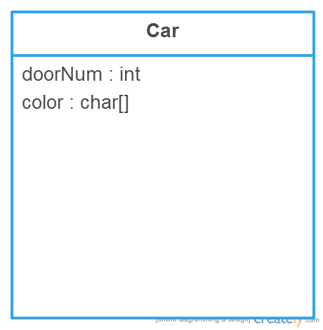

A structure is complex data type declaration that defines a grouped list of variables that are placed in a block of memory. Structures may contain variables of different data types. ( i.e. int, char, float, etc )
The following is an example a struct definition. This structure, car, has two members. Members consist of variables which in turn consist of data types.
struct car {
char *color; // Color of the car
int doorNum; // Number of doors on the car
}; // Please note that a struct ends with a semi-colon
A structure is initialized similar to a datatype (i.e. int, char, float, etc )
To declare a struct, a programmer must type in this fashion:
struct car aCar; // “aCar” is the name of the specific instance of the car struct
A struct’s variables are accessed through a structure member operator ( . ) or a structure pointer operator ( -> ). To obtain a struct’s size, the sizeof() function should be used.
Example:
D printf( “%s”, aCar.color ); //accessing color data through a declared struct
D printf(“%s”, aCarPtr->color ); //accessing color data through a pointer
struct car {
char *color;
int doorNum;
};
int main( void )
{
struct car aCar;
struct car *carPtr;
aCar.color = “Red”; // Access through member operator
aCar.doorNum = 4;
carPtr = &aCar;
printf( “%s\n%d\n”, carPtr->color, carPtr->doorNum ); //Access through arrow operator
}